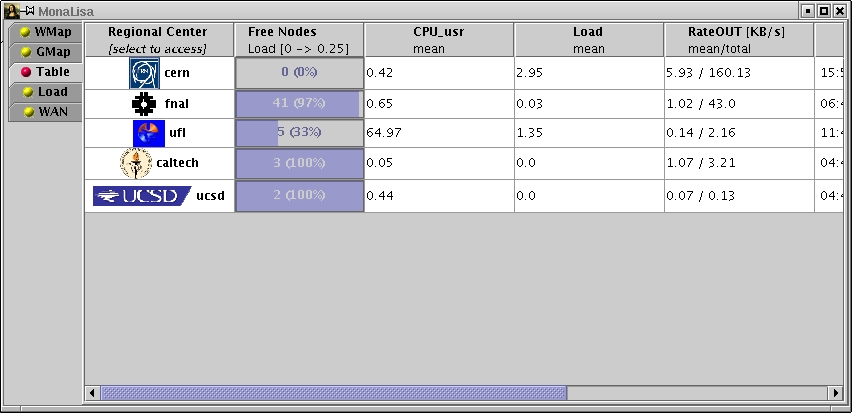
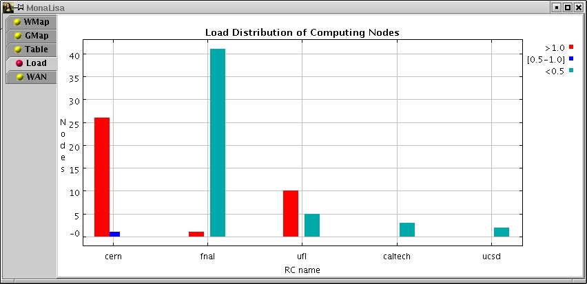
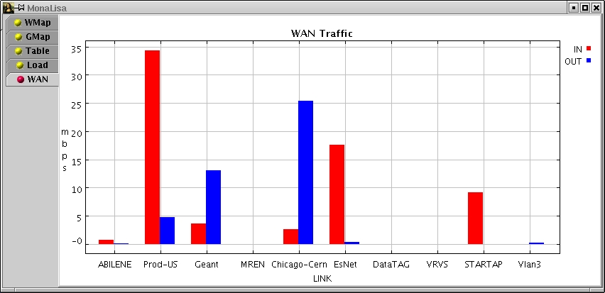
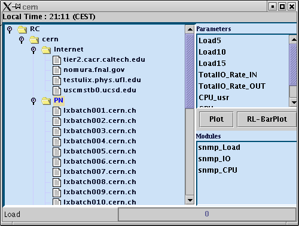

Web Start Client for the Monitoring Service
This is a global monitoring service client
. It allows to discover all the active services, and display real-time
global views for connectivity and traffic as well as the usage and load of
the farms.
It allows to access the configuration of any site and display real-time or
historical values for any monitored parameter in the system.
* You will need to have Java Web Start installed in order for the monitoring tool to launch. If it is not installed, you will be redirected to the Java Web Start setup page.
* This Client is using the Java 3D Runtime which can be found :
If you do not have Java 3D Runtime installed on your computer, please install it first, or the client will start without the 3D panel enabled!
Instructions in how to use it :
At the start time, the application is using a set of JINI Lookup Discovery
Services (unicast mode) to find all the active monitoring services
registered.
For each active service the GUI connects to the center and you can get
any global views as well as any parameter which was collected.
A few Examples :
MonaLisa starts with GUI which shows all the discovered centers
and provides several global views :
The load of the centers is shown using different colors and this view the traffic on the transatlantic line from CERN to Chicago is shown.
In the Graph view,

the global load, Cpu usage, aggregate IO traffic can be selected
from the top/right menu. The measured bandwidth between sites is also
shown and updated in real-time.
If a Regional Center is selected with the first mouse button the Configuration
widow will pop up.
Drag and drop with the second mouse button to move centers on the graph
Click with the third mouse button on a center to see the best replication
path (blue lines ) from that Center to all the other centers.
By Selecting Table option :

a set of values provided by global filters are update in real-time. Selecting the top of a column allows to sort centers based on that value.
The global load view shows a distribution of load for the nodes in all
the regional centers :

The traffic with major networks is presented in WAN view :

If you select with the mouse a center in one of the global
views, the configuration of the center
is presented.

You can now selected individual nodes or clusters and plot the time evolution
os the selected parameters.
A few examples
( Select Internet & Select RTT , and press Plot )

Select PN & select ( Load 5 & Load 10 -- keep shift press
) and press RL_Plot

Select PN Select Load10 and press Plot

If in the Gmap view you select a node with the third button :

The system shows the best replication path from that center to all the others.
With the second button you can move the centers in the Gmap view.
Enjoy ! MonaLisa